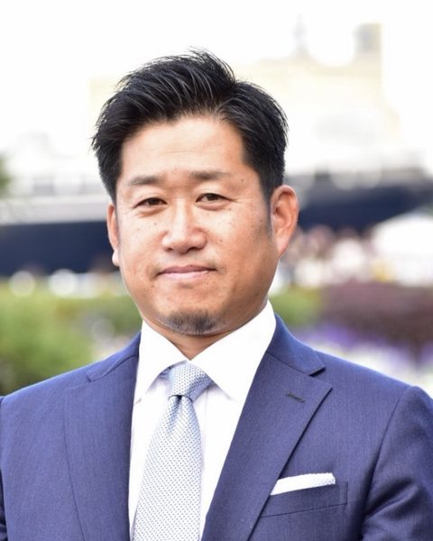

3年前、父を自宅で看取った余命を告げられた父を、最期は家族みんなで自宅で介護。仕事をほぼ休んで付き添い、想像以上の大変さを知りました。
そのとき思ったこと終わりが見えていたから頑張れた。これが何年も続いたら？ 気持ちだけでは、どうにもならない。
そこから学び直した自ら費用を払って認知症・介護の研修を受け、同世代の50代以降のお客様に提案を始めました。
介護の話を、ご契約とご家族のご紹介につなげている
現役の実践者に、“実際の会話”を聞く半日。
20代・30代のお客様が中心の方にこそ、聞いてほしい回です。

「目の前に座った人の人生を、いかに良くするか。保険を売るか、お金を増やすかじゃないんです。」
マネジメントをしながら自分でもお客様に提案し、学んだことを支社のメンバーに届けています。
ご家族の介護に向き合った経験から、認知症・介護の分野を専門的に学んできました。
50代以降のお客様に介護の備えを提案。その流れを、支社内の勉強会でも伝えています。
「家族で看るのは、尊いこと。
でもその裏で、疲れ果てている人がいる。
違う形で家族愛を伝える方法も、あるんです。」── 岡崎 剛太郎
親御さんの介護を終えたお客様が、岡崎さんにだけ打ち明けた言葉。介護は、数字だけでは見えない感情と向き合う話です。
「自分だけ」ではなく、メンバーにも再現できるかを支社で試しています。
いわゆる「口座凍結」。本人の意思が確認できないと、家族でも自由に動かせません。
「迷惑をかけたくない」という親の想いと、現実がすれ違う瞬間です。
毎日の介助、腰の痛み、睡眠不足。いつまで続くか分からない。
大好きな親から、毎日「あなた誰？」と言われる。それでも、看なければならない。
人にお願いするには費用がかかる。準備がなければ、全部を家族で抱えることに。
どれか1つでも、自分の子どもに背負わせたいですか？
── 「迷惑」が景色として見えたとき、お客様の「大丈夫」が変わります。
この流れを、岡崎さんが実際の言葉と資料で話します。
20代・30代のお客様に、介護そのものは響きにくい。でも、その方のご両親・祖父母は、まさに当事者です。
当日は、こうした「若いお客様からご家族へつなぐ会話」を、実際に使っているメンバーがシェアします。
親の介護は見てきた。それでも「自分は大丈夫」と言うお客様への、保障の切り出し方
子・孫のご紹介が「たまたま」で終わらない、お客様との関わり方
貯めることが最優先の20代が、「親の保険も見てほしい」と言い出した会話
介護・認知症の話が、相続・事業承継のご相談に広がった経緯
講師の講話に加えて、実践メンバーが3つのルートの事例をシェア。自分に合うやり方を選べます。
最後に参加者同士で、自分のお客様にどう話すかを考えます。新しい技を覚えたら、試合で試したくなる。そんな一言を持って帰る半日です。
懇親会では講師やメンバーと直接話せます。その後も、毎週木曜朝のモーニング・ラボで実際の案件を持ち込めます。
| これまで | 参加したあとに目指す姿 |
|---|---|
| 「うちは大丈夫」で話が終わる | ▶ 「大丈夫」の裏の想いに触れる、切り出しの一言がある |
| 介護の話は、気が重くて後回し | ▶ 押しつけずに話す流れを、自分の言葉で持っている |
| ご家族の紹介は「たまたま」 | ▶ ご家族へつながる3つのルートを知っている |
| 20代・30代のお客様ばかりで、介護は関係ない | ▶ 若いお客様から、ご両親へつながる話を持っている |
| 困ったら、一人で調べる | ▶ 相談できる実践者の顔が浮かぶ |
※成果をお約束するものではありません。3Cは、そこへ向かうための環境と仲間を用意します。
講師は、講座ビジネスをしている人ではなく、本業で保険を届け続けている現役の実践者。
その知見を、仲間に届ける場が3Cのリアル勉強会です。
全国の保険募集人が、紹介でつながるコミュニティ。会場でもZoomでも参加できます。
| 日時 | 2026年12月11日（金）14:00〜17:30（13:30開場） |
|---|---|
| 会場 | 東京国際フォーラム 会議室G505 東京都千代田区丸の内3-5-1 |
| 形式 | 会場＋Zoom（ハイブリッド）。アーカイブも選べます 当日参加できなかった方には、アーカイブ動画をお届けします |
| 講師 | 岡崎 剛太郎 氏／事例シェア：実践メンバー |
| 懇親会 | 18:00〜20:00予定（希望者のみ・当日現地払い5,000円前後） 申込は12/4（金）23:59まで |
| 申込締切 | 12月9日（水）23:59 |
※3C会員からご紹介・ご招待を受けた方は、フォームで「3C会員からのご紹介」を選んでください。
急な予定で参加できなくなっても、アーカイブ動画でフォローします。
※決済後のキャンセル・返金はお受けしておりません。
どちらでも参加できます。講師やメンバーと直接話せるのは会場参加ならでは。Zoomの方はカメラONで、静かな環境からご参加ください。
ご安心ください。参加できなかった方には、アーカイブ動画をお届けしてフォローします。なお、決済後のキャンセル・返金はお受けしていません。
はい。3C会員からのご紹介の方は、会員と同じ5,500円です。フォームで「3C会員からのご紹介」を選んでください。
はい。介護の当事者は、そのお客様のご両親・祖父母です。若いお客様からご家族へつなげる会話の事例も、当日シェアします。
大丈夫です。商品の説明会ではなく、お客様との会話の進め方を中心に扱います。
懇親会の申込締切は12月4日（金）23:59です。費用は当日現地払いです。
帰省シーズンを前にしたこの時期は、お客様がご家族のことを考えるきっかけが増える時期です。
「うちは大丈夫」の一言で終わらせるか、「うちも話しておこう」につなげられるか。その差は、実践している人の言葉を一度でも聞いたことがあるかどうかだと思っています。
一人で調べて、一人で悩むのではなく、実践者の知恵を自分の力と掛け合わせる。そんな半日にしたいと思います。会場でお会いできるのを楽しみにしています。
Consurance® Community Club 代表 河原 一友